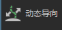

通过将选定的导向转换为曲线来生成动态导向，然后创建 Maya 头发系统。“动态导向”(Dynamic Guides)修改器不会创建动力学模拟，但使用模拟运动确定导向的形状。
选择要设置为动态的导向，然后单击“创建头发系统”(Create Hair System)。Maya 将创建由系统的输出曲线构成的一个 Maya 头发系统。
单击“接受”(Accept)将生成动力学曲线的毛囊，并将曲线重新转换为导向。